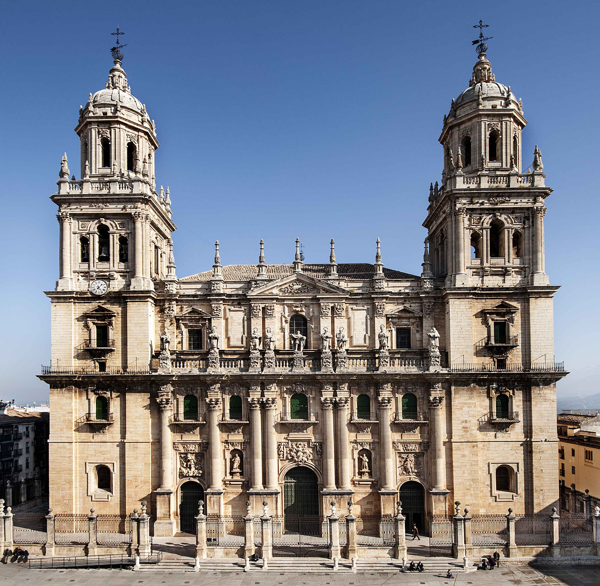

La Santa Iglesia Catedral de la Asunción de la Virgen es la catedral de Jaén, sede episcopal de la diócesis de Jaén, en la comunidad autónoma de Andalucía, España. Se ubica en la plaza de Santa María, frente al Palacio Municipal y el Palacio Episcopal.
La catedral actual fue concebida en el siglo XVI para sustituir al anterior templo gótico del siglo XV. La construcción se prolongó durante varios siglos, a pesar de lo cual la idea original se mantuvo. Destacan la sala capitular y la sacristía, que son la obra cumbre de Andrés de Vandelvira, y una de las obras más importantes del renacimiento español. También es sobresaliente su fachada principal, una de las principales obras del barroco español, construida tras la consagración del templo en 1660 a partir del diseño de Eufrasio López de Rojas. Igualmente, destaca el coro neoclásico debido a su belleza y al gran número de sitiales que lo convierten en uno de los más grandes de España. Una vez finalizadas las obras del edificio, las mismas continuaron en los siglos siguientes principalmente en la decoración interior y de las capillas. Además, a consecuencia del terremoto de Lisboa de 1755 fueron necesarias obras de consolidación en la fachada norte, así como la construcción de la iglesia del Sagrario.
Está dedicada a la Asunción de la Virgen desde la consagración, en 1246, de la antigua Mezquita Mayor de la ciudad musulmana, tras la conquista de la misma por el rey santo Fernando III de Castilla. En su interior se custodia, entre otras obras de arte y objetos religiosos, la reliquia del Santo Rostro o «La Verónica», considerada el auténtico rostro de Jesucristo, que habría quedado plasmado en el lienzo con el que la Verónica le secó la cara durante su pasión. Está guardada en la Capilla Mayor, y se expone a veneración pública de los fieles todos los viernes.
Es considerada una de las obras más notables del Renacimiento en Andalucía de ahí que hace unos años se iniciara el proceso para conseguir su declaración como Patrimonio Mundial por la UNESCO.
Un estudio ha descubierto que la catedral de Jaén sirvió de modelo para la construcción de otras catedrales en América y en España. Ejemplo de esto son las catedrales de Asunción, Málaga, Mérida, Guadalajara, Oaxaca, Puebla, Morelia, Ciudad de México, Lima, Bogotá, Sucre, Cuzco y la de Antigua Guatemala.
La planta de la catedral tiene forma de cruz latina, en la parte superior de los brazos se encuentra la Sacristía Mayor y la iglesia del Sagrario. La superficie rectangular es de 70 m en su fachada y parte posterior y 100 m en las fachadas laterales. Recorre una logia de 12 m de ancha desde la puerta del Sagrario hasta la fachada principal, con una separación de las calles que la bordean por una valla de piedra de más de un metro de altura y sobre ella una verja de hierro forjado de 4 m de altura, separada por pilares coronados por piñas. Desde la fachada principal se entra a esta logia por tres puertas de hierro.
La fachada principal, diseñada por Eufrasio López de Rojas en 1667 y finalizada en 1688 por su discípulo Blas Antonio Delgado, es una de las obras más destacadas del barroco español. Mide 32 m de altura por 33 m de anchura, sin incluir las torres, que enmarcan la composición en forma de retablo. Destaca especialmente la puesta en escena de un gran muestrario iconográfico, casi todo él magníficamente esculpido por Pedro Roldán, en el que se encuentran desde significados universales hasta particulares devociones locales, sobre todo, el Santo Rostro.
Las dos torres gemelas enmarcan la fachada y dan identidad renacentista a la construcción, en contraposición a la horizontalidad de la fachada. Fueron acabadas a principios del siglo XVIII. Se elevan en principio de una planta cuadrangular y sin adornos hasta llegar al primer cuerpo. Se organizan en cinco niveles que aumentan en complejidad arquitectónica y decorativa.
En el interior se pueden observar diferentes estilos, renacentista, barroco, churrigueresco y neoclásico. Presenta planta de salón y consta de tres naves divididas por esbeltos y elegantes pilares cruciformes corintios, bastante separados, coronados por esbeltos y amplios arcos de medio punto que sostienen bóvedas vaídas. Entre los contrafuertes interiores se sitúan las diecisiete capillas, agrupadas dobles en cada tramo por la amplitud de los arcos. Por encima de las capillas se dispone un sistema de balcones, que refuerza el aire civil de la construcción. En el último nivel se completa el conjunto con ventanas serlianas verticales de arco y dintel en las que se hallan las vidrieras. El resultando es una construcción equilibrada y clásica por la coordinación de sus proporciones, lo que le confiere una gran armonía.
| Precio | |
|---|---|
| Entrada General | 5€ |
| Mayores 65 años | 2€ |
| Menores 16 años | 1.5€ |
| Grupos(min. 20 pers.) | 3€ |
| Horario | |
|---|---|
| Lunes a Viernes | 10:00-14:00 / 16:00-19:00 |
| Sábados | 10:00-14:00 / 16:00-17:30 |
| Domingos | 10:00-11:30 / 16:00-19:00 |